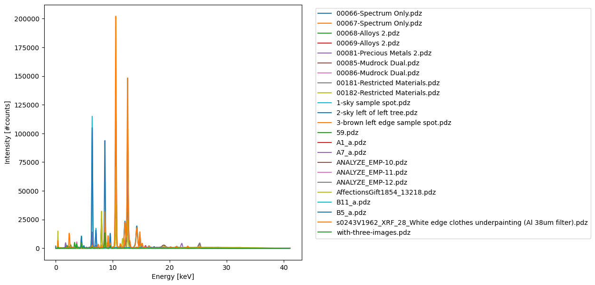

from read_pdz import check_pdz_type
from glob import glob
import osPdz archaeology
How to read legacy pdz files….
If you did not develop a headache in the previous section, then this section is for you! We need to resolve one more problem of reading ancient pdz file formats.
As explained in the previous section, the currently prevalent pdz file format version pdz25 contains multiple blocks of different types and variable size. The first two bytes of a pdz25 file decode as 25. This is not true for old ‘legacy format’ pdz files. In earlier days pdz files were formatted as one single block of data. Legacy files always start with two bytes with hexadecimal code \x01\x01. I call this format pdz11. The exact structure of these legacy files is not fixed, because some instrument detectors are equipped with 1024 channels, while other types contain 2048 channels. To complicate matters further the last part of pdz files can vary in length.
To check a pdz file type import the check_pdz_type() function and provide a valid file path to a pdz file. Listing pdz files is easily done with the standard library function glob('*.pdz').
Let’s check the pdz format for all demo data pdz files.
os.chdir('/home/frank/Work/DATA/read-pdz-demodata/')
pdz_files = sorted(glob('*.pdz'))
print('Checking pdz file format versions: \n ')
for i, f in enumerate(pdz_files):
pdz_type = check_pdz_type(f)
print(f"[{i}] {f}\n --> format: '{pdz_type}'\n")Checking pdz file format versions:
[0] 00066-Spectrum Only.pdz
--> format: 'pdz25'
[1] 00067-Spectrum Only.pdz
--> format: 'pdz25'
[2] 00068-Alloys 2.pdz
--> format: 'pdz25'
[3] 00069-Alloys 2.pdz
--> format: 'pdz25'
[4] 00081-Precious Metals 2.pdz
--> format: 'pdz25'
[5] 00085-Mudrock Dual.pdz
--> format: 'pdz25'
[6] 00086-Mudrock Dual.pdz
--> format: 'pdz25'
[7] 00181-Restricted Materials.pdz
--> format: 'pdz25'
[8] 00182-Restricted Materials.pdz
--> format: 'pdz25'
[9] 1-sky sample spot.pdz
--> format: 'pdz11_1024_channels'
[10] 2-sky left of left tree.pdz
--> format: 'pdz11_1024_channels'
[11] 3-brown left edge sample spot.pdz
--> format: 'pdz11_1024_channels'
[12] 59.pdz
--> format: 'pdz11_2048_channels'
[13] A1_a.pdz
--> format: 'pdz11_2048_channels'
[14] A7_a.pdz
--> format: 'pdz11_2048_channels'
[15] ANALYZE_EMP-10.pdz
--> format: 'pdz11_2048_channels'
[16] ANALYZE_EMP-11.pdz
--> format: 'pdz11_2048_channels'
[17] ANALYZE_EMP-12.pdz
--> format: 'pdz11_2048_channels'
[18] AffectionsGift1854_13218.pdz
--> format: 'pdz25'
[19] B11_a.pdz
--> format: 'pdz11_2048_channels'
[20] B5_a.pdz
--> format: 'pdz11_2048_channels'
[21] s0243V1962_XRF_28_White edge clothes underpainting (Al 38um filter).pdz
--> format: 'pdz25'
[22] with-three-images.pdz
--> format: 'pdz25'
Let’s now see how to parse a pdz11 file. To do so we need to import the multiparse() function and extended format strings for pdz11 files.
from read_pdz import multiparse, file_to_bytes, PDZ11_STRUCT_DICTLet’s take a closer look at the structure of PDZ11 files.
PDZ11_STRUCT_DICT = {
'pdz11_2048_channels' : {'xformat': '2X-i-h-34X-2d-86X-2i-10X-2f-188X-Z-*X',
'param_keys': ['pdz-version', '??', 'NumberOfChannels', '??', '??',
'eVPerChannel', '??', 'RawCounts', 'ValidCounts', '??', 'XrayVoltageInkV',
'XrayFilamentCurrentInMicroAmps', '??', 'Intensity (2048 channels)', '??']},
'pdz11_1024_channels' : {'xformat': '2X-i-h-34X-2d-86X-2i-10X-2f-24X-z-*X',
'param_keys': ['pdz-version', '??', 'NumberOfChannels', '??', '??',
'eVPerChannel', '??', 'RawCounts', 'ValidCounts', '??', 'XrayVoltageInkV',
'XrayFilamentCurrentInMicroAmps', '??', 'Intensity (1024 channels)', '??']}
}Given the slightly different xformat strings for the two types of pdz11 legacy files we can now check if we can also parse these files correctly.
Code
n = 13
pdz_file = pdz_files[n]
pdz_type = check_pdz_type(pdz_file)
arr = file_to_bytes(pdz_file)
xformat = PDZ11_STRUCT_DICT[pdz_type]['xformat']
param_keys = PDZ11_STRUCT_DICT[pdz_type]['param_keys']
print(f"file: '{pdz_file}'\n--> pdz type: '{pdz_type}'\n--> xformat string: '{xformat}'")file: 'A1_a.pdz'
--> pdz type: 'pdz11_2048_channels'
--> xformat string: '2X-i-h-34X-2d-86X-2i-10X-2f-188X-Z-*X'parsed, tail = multiparse(xformat, arr, param_keys=param_keys)| values | param_keys | |
|---|---|---|
| 0 | b'\x01\x01' | pdz-version |
| 1 | 23 | ?? |
| 2 | 2048 | NumberOfChannels |
| 3 | b'\xc8\xe6\xc8\xca\xd6\xd8\x02\x01?\x02\x01\x04' | ?? |
| 4 | 0.0 | ?? |
| 5 | 20.085341 | eVPerChannel |
| 6 | b'\xa8\x91@\x10\x9d@\xe0j@n@\xf4\x01\x8c\x02' | ?? |
| 7 | 132513792 | RawCounts |
| 8 | 65538 | ValidCounts |
| 9 | b'\x0e\t\x11\x07\xde\x02' | ?? |
| 10 | 35.0 | XrayVoltageInkV |
| 11 | 7.0 | XrayFilamentCurrentInMicroAmps |
| 12 | b'\x9d\xcf\xc8\xfe\x02\xff\xff\n\x18\x80\x10\x... | ?? |
| 13 | [781, 653, 461, 304, 146, 57, 27, 9, 2, 1, 0, ... | Intensity (2048 channels) |
| 14 | b'' | ?? |
Code
n = 11
pdz_file = pdz_files[n]
pdz_type = check_pdz_type(pdz_file)
arr = file_to_bytes(pdz_file)
xformat = PDZ11_STRUCT_DICT[pdz_type]['xformat']
param_keys = PDZ11_STRUCT_DICT[pdz_type]['param_keys']
print(f"file: '{pdz_file}'\n--> pdz type: '{pdz_type}'\n--> xformat string: '{xformat}'")file: '3-brown left edge sample spot.pdz'
--> pdz type: 'pdz11_1024_channels'
--> xformat string: '2X-i-h-34X-2d-86X-2i-10X-2f-24X-z-*X'parsed, tail = multiparse(xformat, arr, param_keys=param_keys)| values | param_keys | |
|---|---|---|
| 0 | b'\x01\x01' | pdz-version |
| 1 | 20 | ?? |
| 2 | 1024 | NumberOfChannels |
| 3 | b'\xc8\xe6\xc8\xca\xd6\xd8\x02\x01?\x02\xa6\xf... | ?? |
| 4 | 60.76 | ?? |
| 5 | 40.0 | eVPerChannel |
| 6 | b'7\xd4@\xf9\xd5@\xe0j@n@\xf0?-C\x1c\xeb\xe26\... | ?? |
| 7 | 1001652224 | RawCounts |
| 8 | 519897088 | ValidCounts |
| 9 | b'\xc4w\r0Y\x07' | ?? |
| 10 | 40.0 | XrayVoltageInkV |
| 11 | 2.2 | XrayFilamentCurrentInMicroAmps |
| 12 | b'\xb9\xa5\x01\x10\xfe\xffpmidefau' | ?? |
| 13 | [0, 0, 0, 0, 0, 0, 0, 0, 0, 0, 0, 0, 0, 0, 0, ... | Intensity (1024 channels) |
| 14 | b'\x01\x02\x01\x01\x01\x01\x02\x01\x01\x01\x01... | ?? |
Although legacy pdz11 file formats contain many bytes that we can not yet read, at least we can now extract the spectral data! I will show you here how to create a plot with spectra for all variants of pdz files in our pdz zoo. We need to import extract_spectrum() and matplotlib.pyplot to create our plot.
from read_pdz import extract_spectrum
import matplotlib.pyplot as pltdf_list = [extract_spectrum(pf, to_csv=False, verbose=False) for pf in pdz_files]Code
fig, ax = plt.subplots(figsize=[7, 7])
for df in df_list:
df.plot(ax=ax);
ax.legend(bbox_to_anchor=(1.04, 1), loc="upper left")
ax.set_xlabel('Energy [keV]')
ax.set_ylabel('Intensity [#counts]');
FUNCTIONS
extract_spectrum
extract_spectrum (pdz_file, to_csv=True, verbose=True)
*Direct extraction of spectral data from pdz_file.
Should now work for both pdz25 and both pdz11 file formats.*
check_pdz_type
check_pdz_type (pdz_file, verbose=True)
Read first two bytes and for legacy pdz files number of detector channels to check pdz file type.